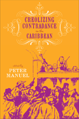

How contradance and quadrille gave rise to merengue, danzón and other popular Creole dances
How contradance and quadrille gave rise to merengue, danzón and other popular Creole dances


 How contradance and quadrille gave rise to merengue, danzón and other popular Creole dances
How contradance and quadrille gave rise to merengue, danzón and other popular Creole dances

|  |
Creolizing Contradance in the CaribbeanIncludes CDedited by Peter Manuelpaper EAN: 978-1-59213-735-0 (ISBN: 1-59213-735-0) |
"The European strain represented in the Caribbean by contradance and quadrille is fascinating as part of a growing scholarly recognition of the fundamental importance of that art to many cultures. The focus on dance in addition to music is timely, and the contributors—all very respected scholars—are authoritative, yet lucid. This is a very important book."
—Julian Gerstin, Keene State College
The contradance and quadrille, in their diverse forms, were the most popular, widespread, and important genres of creole Caribbean music and dance in the nineteenth century. Throughout the region they constituted sites for the interaction of musicians and musical elements of different racial, social, and ethnic origins, and they became crucibles for the evolution of genres like the Cuban danzón and son, the Dominican merengue, and the Haitian mereng.
Creolizing Contradance in the Caribbean is the first book to explore this phenomenon in detail and with a pan-regional perspective. Individual chapters by respected area experts discuss the Spanish-, French-, and English-speaking Caribbean. For each area, they cover the musical and choreographic features, social dynamics, and historical development and significance and consider them in relation to the broader Caribbean historical context. This groundbreaking text fills a significant gap in studies of social dance and Caribbean cultural history.
Excerpt available at www.temple.edu/tempress
"Creolizing Contradance in the Caribbean tackles a significant topic of interest to Caribbeanists and more generally to ethnomusicologists and dance ethnologists. Examining the important legacies of the contradance and quadrille in the Caribbean basin in a comparative perspective and across national lines, this volume furthers research on the topic and captures the state of the field"
—Gage Averill, Vice-Principal Academic and Dean, University of Toronto at Mississauga
"[T]he book will inspire further comparative investigations into the music and dance traditions of the nineteenth-century Caribbean and how they have shaped the deeply interconnected popular forms of the twentieth century and today."
—Journal of Folklore Research
"[A] welcome addition to scholarship grappling with the complexities of the ongoing sociohistorical processes that shape, and concomitantly are shaped by, Caribbean expressive cultural politics....The individual essays, which stand on their own or as interconnected chapters, provide a good balance of musicological analysis, historical contextualization, and sociocultural theory that is largely accessible to interested non-specialists."
—CENTRO: Journal of the Center for Puerto Rican Studies
"[M]ost of the articles in this collection focus primarily on the social history of contradance and quadrille, drawing valuable connections between the development and changes in these cultural expressions in response to large- and small-scale economic, social, and political developments.... Creolizing Contradance in the Caribbean will certainly be useful for primarily graduate-level courses in ethnomusicology, dance ethnology, and related studies...this volume will be of great interest to scholars of the Caribbean, particularly historians, dance scholars, anthropologists, and ethnomusicologists."
—American Music
"This text is a masterpiece from Temple’s classic Music & Dance series.... This is an excellent account of the contradance and the quadrille in the Caribbean. In so doing, the contributors also account for many other Caribbean dances and musics. Broadly speaking, the book is a rich and detailed case of creativity and creolisation that will appeal to anthropologists, ethnomusicologists and historians at the very least."
—Social Anthropology/Anthropologie Sociale
"Peter Manuel and the contributors to this volume deliver a much-needed study of the contradance and quadrille traditions of the Spanish-, French-, and English-speaking Caribbean islands.... This neat volume is refreshingly cohesive, a feat this reviewer attributes to the contextual information presented in the introduction and to the individual authors.... Creolizing Contradance stands as an important resource for serious students and experts of the Caribbean interested in the complex process of creolization and the power of music and dance to cut across social classes and develop as a symbol of national identity."
—The Hispanic American Historical Review
"[T]he book makes several contributions to the scholarship on Caribbean and, more generally, Latin American dance and music history. One such contribution is the balanced treatment of the musical and choreographic elements of contradance, which sets the volume apart from other musicological studies of Latin American dance genres in which themes pertaining to movement, choreography, and the body are treated tangentially.... Also, by highlighting a genre rooted in Europe, this book broadens the range of the studies in Caribbean music and dance as represented in publications in English from recent decades.... [T]he reason why this volume makes a distinctive contribution to the field of Caribbean music and dance studies is to a large extent related to its focus on the past... the volume successfully provides historical references, going back to the late eighteenth century, of features that still today characterize Caribbean culture."
—Dance Chronicles: Studies in Dance and the Related Arts
1. Introduction: Contradance and Quadrille Culture in the Caribbean
2. Cuba: From Contradanza to Danzón
3. Puerto Rico: The Rise and Fall of the Danza as National Music
4. The Dominican Republic: Danza and the Contradanced Merengue
5. Creole Quadrilles of Guadeloupe, Dominica, Martinique, and St. Lucia
6. Haiti: Tracing the Steps of the Méringue and Contredanse
7. The English-Speaking Caribbean: Re-embodying the Colonial Ballroom
Contributors
Contents of the Compact Disc
Index
 | Peter Manuel is Professor of Music at John Jay College and the CUNY Graduate Center. He is the author of six books and many articles on musics of India, the Caribbean, Spain, and other regions, including East Indian Music in the West Indies: Tân-Singing, Chutney, and the Making of Indo-Caribbean Culture (Temple). He also plays sitar, jazz piano, and flamenco guitar. |
Music and Dance
Latin American/Caribbean Studies
Anthropology
Studies in Latin American and Caribbean Music, edited by Peter Manuel.
Studies in Latin American and Caribbean Music, edited by Peter Manuel, aims to present interdisciplinary studies in the traditional and contemporary musics of Latin America and the Caribbean.
© 2015 Temple University. All Rights Reserved. This page: http://www.temple.edu/tempress/titles/1954_reg.html.